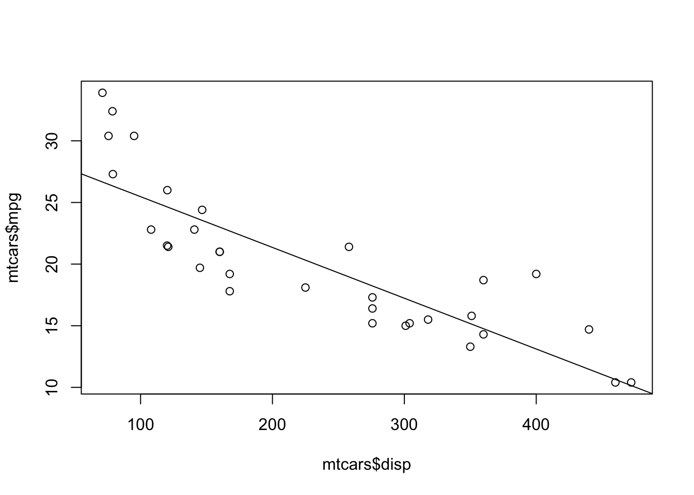
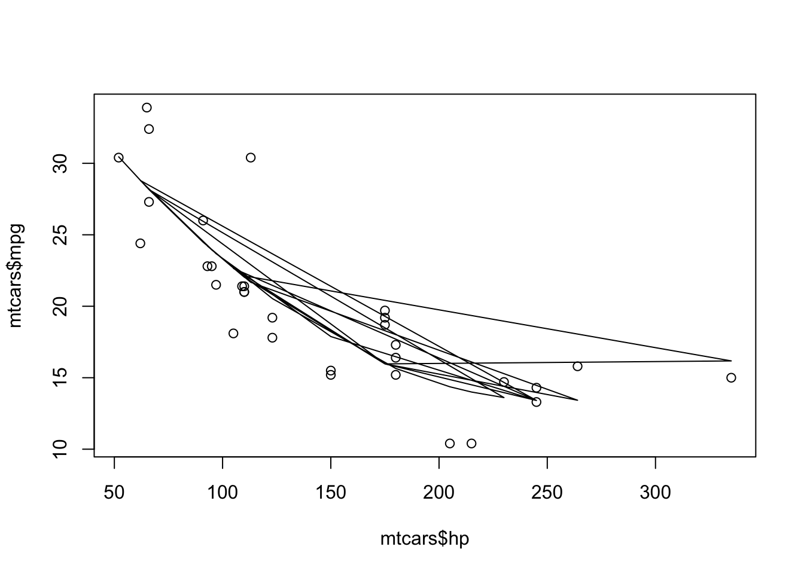

Unveiling Relationships in Data: A Journey through Linear and Nonlinear Regression
ml
code
analysis
Author
Akanksha Singh
Published
November 25, 2023
In the realm of data science, regression analysis stands as a cornerstone technique for understanding the relationships between variables. It enables us to quantify the association between an independent variable (or predictor) and a dependent variable (or response), shedding light on the underlying patterns and trends within data. Regression analysis can be broadly categorized into two main types: linear and nonlinear. Linear regression assumes a straight-line relationship between the independent and dependent variables, while nonlinear regression caters to more complex relationships that may involve curves or other non-linear patterns.
In this blog post, we’ll embark on a journey to explore both linear and nonlinear regression using R, employing public datasets to illustrate their applications. We’ll delve into the code and visualizations, unraveling the intricacies of these regression techniques and their ability to uncover hidden insights from data.
Linear Regression: A Foundation for Understanding Linear Relationships
Linear regression, the simpler of the two, assumes a linear relationship between the independent variable (X) and the dependent variable (Y). It models the relationship as a straight line, represented by the equation:
Y = β0 + β1X + ε
where:
Y is the dependent variable
X is the independent variable
β0 is the intercept, representing the value of Y when X is zero
β1 is the slope, indicating the change in Y for a one-unit change in X
ε is the error term, representing the random variation not explained by the model
Linear regression is a powerful tool for understanding linear relationships between variables. It provides insights into the direction and strength of the association, allowing us to make predictions about the dependent variable based on the independent variable.
Linear Regression in Action: Predicting Fuel Consumption from Engine Size
The mtcars dataset, included in the base package of R, provides information about the fuel consumption and other characteristics of 32 model cars. We can use this data to explore the relationship between fuel consumption (mpg) and engine size (disp), hypothesizing that there might be a negative correlation between the two variables.
# Load the mtcars datasetdata(mtcars)# Perform linear regression to predict Fuel Consumption (mpg) based on Engine Size (disp)model <-lm(mpg ~ disp, data = mtcars)# Summarize the regression modelsummary(model)
Call:
lm(formula = mpg ~ disp, data = mtcars)
Residuals:
Min 1Q Median 3Q Max
-4.8922 -2.2022 -0.9631 1.6272 7.2305
Coefficients:
Estimate Std. Error t value Pr(>|t|)
(Intercept) 29.599855 1.229720 24.070 < 2e-16 ***
disp -0.041215 0.004712 -8.747 9.38e-10 ***
---
Signif. codes: 0 '***' 0.001 '**' 0.01 '*' 0.05 '.' 0.1 ' ' 1
Residual standard error: 3.251 on 30 degrees of freedom
Multiple R-squared: 0.7183, Adjusted R-squared: 0.709
F-statistic: 76.51 on 1 and 30 DF, p-value: 9.38e-10
# Create a scatter plot with the fitted regression lineplot(mtcars$disp, mtcars$mpg)abline(model$coefficients)

This code block performs linear regression using the lm() function from the stats package. The formula mpg ~ disp specifies the dependent variable (mpg) and the independent variable (disp). The data = mtcars argument indicates that the analysis should be conducted on the mtcars dataset. The result of this line is stored in the model object.
The summary() function provides information about the estimated coefficients for the intercept and slope, as well as their standard errors and p-values. It also provides overall statistics about the model fit, such as the R-squared value and the adjusted R-squared value.
The plot() function creates a scatter plot of Fuel Consumption (mpg) versus Engine Size (disp). The abline() function adds the fitted regression line to the scatter plot. The coefficients for the line are extracted from the model$coefficients object.
Visualizing the Linear Relationship:
The scatter plot clearly depicts the linear pattern between Fuel Consumption and Engine Size, with the regression line capturing the overall trend. The negative slope of the line indicates that as engine size increases, fuel consumption decreases.
When data exhibits a nonlinear relationship, linear regression falls short. Nonlinear regression techniques, such as polynomial regression, allow us to model more complex relationships between variables.
Polynomial regression involves fitting a polynomial function of the independent variable to the dependent variable. The degree of the polynomial determines the complexity of the curve.
Visualizing the Nonlinear Relationship:
Using the mtcars dataset, we can explore the relationship between Horsepower and Fuel Consumption, which may not be linear.
# Perform polynomial regression with a quadratic termmodel <-lm(mpg ~ hp +I(hp^2), data = mtcars)# Summarize the regression modelsummary(model)
Call:
lm(formula = mpg ~ hp + I(hp^2), data = mtcars)
Residuals:
Min 1Q Median 3Q Max
-4.5512 -1.6027 -0.6977 1.5509 8.7213
Coefficients:
Estimate Std. Error t value Pr(>|t|)
(Intercept) 4.041e+01 2.741e+00 14.744 5.23e-15 ***
hp -2.133e-01 3.488e-02 -6.115 1.16e-06 ***
I(hp^2) 4.208e-04 9.844e-05 4.275 0.000189 ***
---
Signif. codes: 0 '***' 0.001 '**' 0.01 '*' 0.05 '.' 0.1 ' ' 1
Residual standard error: 3.077 on 29 degrees of freedom
Multiple R-squared: 0.7561, Adjusted R-squared: 0.7393
F-statistic: 44.95 on 2 and 29 DF, p-value: 1.301e-09
# Create a scatter plot with the fitted regression curveplot(mtcars$hp, mtcars$mpg)lines(mtcars$hp, predict(model))

The plot reveals a more complex relationship between Horsepower and Fuel Consumption, with a curve indicating a non-linear association. The initial increase in horsepower leads to a decrease in fuel consumption, but as horsepower continues to increase, fuel consumption starts to rise again.
Nonlinear Regression: A Path to Unveiling Complex Patterns
Nonlinear regression techniques like polynomial regression provide a more versatile approach for modeling complex relationships between variables. They allow us to capture patterns that cannot be adequately represented by a straight line. This makes nonlinear regression a valuable tool for analyzing data that exhibits non-linear trends.
In addition to polynomial regression, there are various other nonlinear regression techniques, such as exponential regression and logarithmic regression. The choice of the appropriate nonlinear regression technique depends on the specific nature of the relationship between the independent and dependent variables.
Conclusion: Unveiling the Stories Hidden in Data
Linear and nonlinear regression serve as powerful tools for understanding the relationships between variables in data. Linear regression provides a simple yet effective approach for linear relationships, while nonlinear regression caters to more intricate patterns. By exploring these regression techniques using R and public datasets, we’ve gained insights into their applications and capabilities.
Whether dealing with straightforward linear associations or complex nonlinear trends, regression analysis empowers us to uncover the hidden stories within data. By quantifying the relationships between variables, we can gain insights into the underlying mechanisms driving the behavior of systems and phenomena. As we continue to explore the vast realm of data science, regression analysis will remain a cornerstone technique, enabling us to transform raw data into meaningful knowledge.
Source Code
---title: "Relationships in Data: A Journey through Linear and Nonlinear Regression"date: "2023-11-25"reading-time: "5 mins"categories: [ml, code, analysis]image: "regression.jpg"---In the realm of data science, regression analysis stands as a cornerstone technique for understanding the relationships between variables. It enables us to quantify the association between an independent variable (or predictor) and a dependent variable (or response), shedding light on the underlying patterns and trends within data. Regression analysis can be broadly categorized into two main types: linear and nonlinear. Linear regression assumes a straight-line relationship between the independent and dependent variables, while nonlinear regression caters to more complex relationships that may involve curves or other non-linear patterns.In this blog post, we'll embark on a journey to explore both linear and nonlinear regression using R, employing public datasets to illustrate their applications. We'll delve into the code and visualizations, unraveling the intricacies of these regression techniques and their ability to uncover hidden insights from data.## **Linear Regression: A Foundation for Understanding Linear Relationships**Linear regression, the simpler of the two, assumes a linear relationship between the independent variable (X) and the dependent variable (Y). It models the relationship as a straight line, represented by the equation:``` Y = β0 + β1X + ε```where:- `Y` is the dependent variable- `X` is the independent variable- `β0` is the intercept, representing the value of Y when X is zero- `β1` is the slope, indicating the change in Y for a one-unit change in X- `ε` is the error term, representing the random variation not explained by the modelLinear regression is a powerful tool for understanding linear relationships between variables. It provides insights into the direction and strength of the association, allowing us to make predictions about the dependent variable based on the independent variable.### **Linear Regression in Action: Predicting Fuel Consumption from Engine Size**The `mtcars` dataset, included in the `base` package of R, provides information about the fuel consumption and other characteristics of 32 model cars. We can use this data to explore the relationship between fuel consumption (mpg) and engine size (disp), hypothesizing that there might be a negative correlation between the two variables.```{r}# Load the mtcars datasetdata(mtcars)# Perform linear regression to predict Fuel Consumption (mpg) based on Engine Size (disp)model <-lm(mpg ~ disp, data = mtcars)# Summarize the regression modelsummary(model)# Create a scatter plot with the fitted regression lineplot(mtcars$disp, mtcars$mpg)abline(model$coefficients)```This code block performs linear regression using the `lm()` function from the `stats` package. The formula `mpg ~ disp` specifies the dependent variable (mpg) and the independent variable (disp). The `data = mtcars` argument indicates that the analysis should be conducted on the `mtcars` dataset. The result of this line is stored in the `model` object.The `summary()` function provides information about the estimated coefficients for the intercept and slope, as well as their standard errors and p-values. It also provides overall statistics about the model fit, such as the R-squared value and the adjusted R-squared value.The `plot()` function creates a scatter plot of Fuel Consumption (mpg) versus Engine Size (disp). The `abline()` function adds the fitted regression line to the scatter plot. The coefficients for the line are extracted from the `model$coefficients` object.### **Visualizing the Linear Relationship:**The scatter plot clearly depicts the linear pattern between Fuel Consumption and Engine Size, with the regression line capturing the overall trend. The negative slope of the line indicates that as engine size increases, fuel consumption decreases.## **Nonlinear Regression: Capturing Complex Relationships**When data exhibits a nonlinear relationship, linear regression falls short. Nonlinear regression techniques, such as polynomial regression, allow us to model more complex relationships between variables.Polynomial regression involves fitting a polynomial function of the independent variable to the dependent variable. The degree of the polynomial determines the complexity of the curve.### **Visualizing the Nonlinear Relationship:**Using the `mtcars` dataset, we can explore the relationship between Horsepower and Fuel Consumption, which may not be linear.```{r}# Perform polynomial regression with a quadratic termmodel <-lm(mpg ~ hp +I(hp^2), data = mtcars)# Summarize the regression modelsummary(model)# Create a scatter plot with the fitted regression curveplot(mtcars$hp, mtcars$mpg)lines(mtcars$hp, predict(model))```### The plot reveals a more complex relationship between Horsepower and Fuel Consumption, with a curve indicating a non-linear association. The initial increase in horsepower leads to a decrease in fuel consumption, but as horsepower continues to increase, fuel consumption starts to rise again.### **Nonlinear Regression: A Path to Unveiling Complex Patterns**Nonlinear regression techniques like polynomial regression provide a more versatile approach for modeling complex relationships between variables. They allow us to capture patterns that cannot be adequately represented by a straight line. This makes nonlinear regression a valuable tool for analyzing data that exhibits non-linear trends.In addition to polynomial regression, there are various other nonlinear regression techniques, such as exponential regression and logarithmic regression. The choice of the appropriate nonlinear regression technique depends on the specific nature of the relationship between the independent and dependent variables.## **Conclusion: Unveiling the Stories Hidden in Data**Linear and nonlinear regression serve as powerful tools for understanding the relationships between variables in data. Linear regression provides a simple yet effective approach for linear relationships, while nonlinear regression caters to more intricate patterns. By exploring these regression techniques using R and public datasets, we've gained insights into their applications and capabilities.Whether dealing with straightforward linear associations or complex nonlinear trends, regression analysis empowers us to uncover the hidden stories within data. By quantifying the relationships between variables, we can gain insights into the underlying mechanisms driving the behavior of systems and phenomena. As we continue to explore the vast realm of data science, regression analysis will remain a cornerstone technique, enabling us to transform raw data into meaningful knowledge.